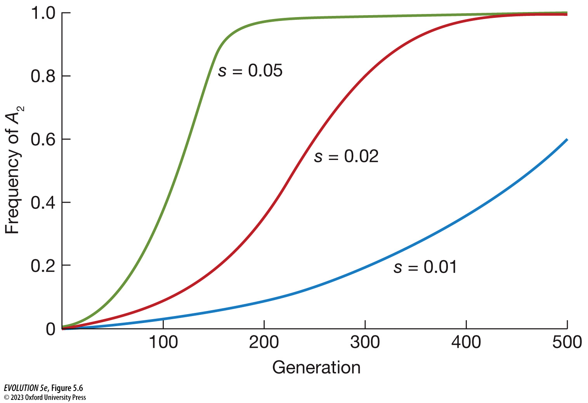

Fundamentals of Evolution
EEEB G6110
Session 5: Genetical Theory of Natural Selection
Today's topics
1. Review of Adaptation (chapter 3)
2. Genetics primer
3. Fitness and Natural Selection Coefficients
4. Rate of Evolution
5. Fitness landscape
Genetics Primer
In this section we introduce genetic analysis, but only in a relatively simple form. You do not yet need to know molecular biology, or bioinformatics, or coalescent theory, or genomics. Instead, we are still working within the realm of "beanbag genetics", where we concern ourselves mainly with theoretical models of one or a few genes at a time, each usually with at most two alleles (variants) present within a single population.
Our simple models throughout this section will assume that individuals are diploid, meaning they have two copies of each gene. The copies in a population can all be the same, in which case there is no genetic variation, or an individual can be homozygous for either allele, or heterozygous.
Fitness
An individual's absolute fitness is the number of offspring that it produces over its lifetime. It is often represented by the symbol `W`. While this value is of interest, it is only relevant for predicting evolution when it is compared to the fitness of other units; i.e., it is the relative differences in fitness among different units (alleles, individuals, etc) that matter. Relative fitness is represented by the lower case symbol w.
This is measured by defining a reference against which you will compare other units. For example, it is common practice to set the fitness of the most common allele (sometimes called the wild-type allele) to 1.0, and to measure the fitness of other alleles relative to this (>1 indicates higher fitness, <1 indicates lower fitness).
Fitness components
Positive selection
When one allele has higher fitness than another natural selection will favor its spread through a population (increase in frequency). It is not guaranteed to increase though, because chance effects (genetic drift) still plays a role in evolution.
Positive selection
Selection Coefficient
We can study the rate of evolution in a simple model of a single gene as the rate of change in allele frequencies. This rate is determined by the relative fitness advantage of one allele relative to another, which is called the selection coefficient (s). This determines the strength of selection. Therefore, we can say that the strength of selection is determined by differences in relative fitness.
A selection coefficient is not a fixed property of an allele. It can change over time either because the environment changed, or because the fitness of other alleles changed for some reason, or because it interacts with other alleles (epistasis).
Selection Coefficient
Selection Coefficient
A selection coefficient is the difference in relative fitness of one allele versus another. If A1 has a 20% higher fitness than A2 then s=0.2; if A1 has 0.1% higher fitness then s=0.001. Note, this is a measure of the effect of an individual allele (A1 versus A2) not of diploid genotypes (A1A1, A1A2, A2A2).
In practice, we usually measure the fitness of genotypes (because the organisms are diploid) and then try to infer the selection coefficient based on the relative fitness of genotypes.
Measuring change in allele frequency
In a simple model with only two alleles we can focus on their frequencies
rather than their total total numbers, since the latter also depends on
population size. These frequencies will usually be denoted p and q.
Because there are only two alleles, and their frequencies must sum to 1,
we know that $ q = (1 - p)$.
So if we know p, we also know q. This is why many equations only include p.
Measuring change in allele frequency
(Box 5.1) To find the change in frequency of p from one generation to the next
($ \Delta p $) we calculate the expected frequency of the three genotypes among
surviving adults after selection has acted on them.
we multiply each genotype frequency times its relative fitness. Then for each
genotype we divide this value by the population mean fitness, defined below.
This leads to the simple approximation: $\Delta p = sp(1-p)$
The change in $p$ is the product of $s$ (selection coefficient)
and $p(1-p)$ (genetic variation):
Rate of evolution (S-shaped)
The time for a beneficial allele to reach fixation is approximately $ 1 / 4s $
Genetic Variation
Genetic variation is greatest when two alleles are at equal frequencies
Population mean fitness
The population mean fitness is involved for the calculation of rate of evolution. It is the sum of the genotype frequency times the relative fitness for each of the genotypes in a population. This simplifies into a much simpler term that is easier to describe: \[ \bar w = 1 + 2sp \] How do s and p impact population mean fitness?
Terminology
An allele with a higher relative fitness relative to a reference allele has a positive selection coefficient and experiences positive selection. It may be called a "beneficial allele", in contrast to a "neutral allele" (s=0) or a "deleterious allele" (s<0). More casually we could also say that "selection favors this allele".
Dominance
Dominance describes an allele's affect on the heterozygote phenotype and affects the rate of evolution.
Fisher's fundamental theorem
The rate of adaptive evolution is the rate of evolution of population
mean fitness.
Fisher showed mathematically that, by definition, natural selection causes the population mean fitness ($\bar w $) to increase over time. This means that each generation, to the extent there is variance in relative fitness, and selection remains constant, natural selection will lead to a reduction in the variance in fitness, which also shifts the mean fitness higher. Because variance can never be negative, natural selection causes populations to evolve in a way that makes them better adapted (to have higher fitness).
The rate of increase in fitness of any organism at any time is equal to its genetic variance in fitness at that time.
Adaptive Landscape
Wright developed a similar theory based on the concept of a fitness landscape.
Adaptive Landscape

Linkage Disequilibrium (LD)
Linkage disequilibrium (LD) describes a statistical association (correlation) between two different loci in the genome. If they were unlinked/uncorrelated, then knowing the allele at one locus would tell you nothing about the likely allele at the other locus. LD can occur either because two loci are physically linked by being very close together in the genome, or, it can also arise due to a history of correlated selection.
Selective Sweep
When two loci are in LD then selection on an allele at one locus can cause the frequency of a particular allele at the other locus to also change. This is called "genetic hitchhiking". When selection is strong, it can cause rapid fixation of an allele such that there is not enough time for recombination to occur and unlink the new allele from the random neutral alleles around it. This leads to a loss of diversity surrounding the adaptive allele (Fig. 5.14).
Genetic Hitchhiking
Selection on standing genetic variation causes less loss of diversity.
Deleterious mutations
Selection that removes deleterious mutations from a population is called "purifying selection". Deleterious mutations may persist in populations for several reasons that we have learned about (correlated evolution, trade-offs, linkage disequilibrium, recessiveness). But the most likely reason of all is that they are very common and frequently re-introduced into a population. The re-introduction and purging of deleterious alleles is called "mutation-selection balance."